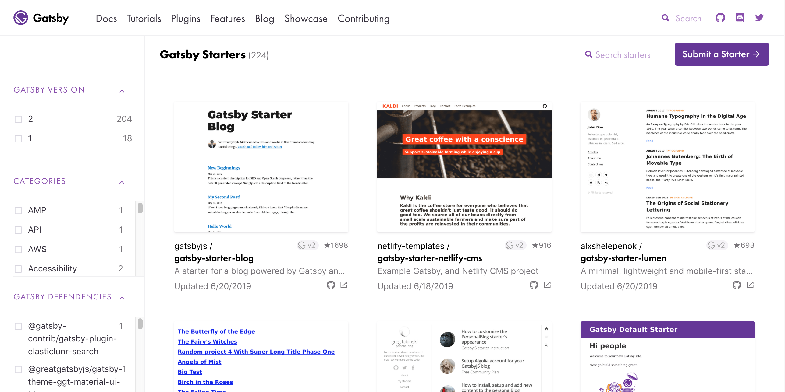

Building a super performant GossipGirl.com in Gatsby in under 50 Minutes
Jennifer Wadella

Jennifer Wadella
@likeOMGitsFEDAY
- JavaScript Developer at Bitovi
- GossipGirl fan
- Kombucha brewin' crazy plant lady
GatsbyJS
React based framework to help you build websites blazing fast. How fast? Fast enough to build the new gossipgirl.com in the next 50 minutes.
Why Consider Gatsby
- Starers to get up and running quickly
- Less time starting up, more time coding
- Plenty of plugins to optimize development
- Great community
Starting a New Gatsby Project
Two options:
- Quick start via the CLI
- Using a starter from the community created recipes
Starter Library

Gatsby Setup
- Explore directory structure
- Use React components
- Create pages
- Create layout components
- Display data
- Use Gatsby plugins
Directory Structure
- Pages folder - everything *.js file will become a page at /filename
- Components folder - put layouts and react components here.
- Pages/blasts folder - markdown files of blasts
Using React components
Lets start to build our page structure. But first ... a React crashcourse.
React component types
Components in Gatsby
Creating Gossipgirl.com home page
- Header
- Left Nav
- Right Nav
- Latest post
To Create the Header
- Include logo
- Use GraphQL to request image
- Use gatsby-image to process and serve optimized images
- Rely on gatsby-plugin-sharp to create progressive images
- Link logo to home page
- Use Gatsby Link API
Let's add some gossip!
Data Strategy
- Create blasts in markdown files
- Use GraphQL and Gatsby's createPages API
- Create template to display blast
- Create page to display all blasts
- Use GraphiQL to explore data/structuring
Using Gatsby APIs to dynamically
create our pages
We can access various APIs in the gatsby-node.js file.
- We'll create blast pages dynamically from all markdown files using gatsby-transformer-remark
- We'll create slugs for all of our pages
Testing our setup
Create Blast Template + Snippet
- Create template with GraphQl Query
- Create reusable "snippet" component to show blast with styling
List All blasts
- Create "blasts" page
- Write query to pull in all blasts
Nailing the progressive web app
Not a PWA expert? No problem!
Simply add the gatsby-plugin-manifest then enable gatsby-plugin-offline
SEO time
Let's make sure everyone can find our gossip!
We'll use react-helmet to manage meta data
Key Concepts
- To save time find a starter with similar features to what you're building
- When in doubt, take a peek at Gatsby plugins
- Optimize your images
- Test performance using Lighthouse and follow recommendations
- Get involved in the Gatsby community - they're always looking for contributors!
Go Build Some Websites & Get Gatsby Swag!
Use code GATSBYKC19 at for 20% off through August 19th!
Questions?
Slides available at: tehfedaykin.github.io/xoxoGatsby
Gossip Girl Website: https://github.com/tehfedaykin/GossipGirlGatsby